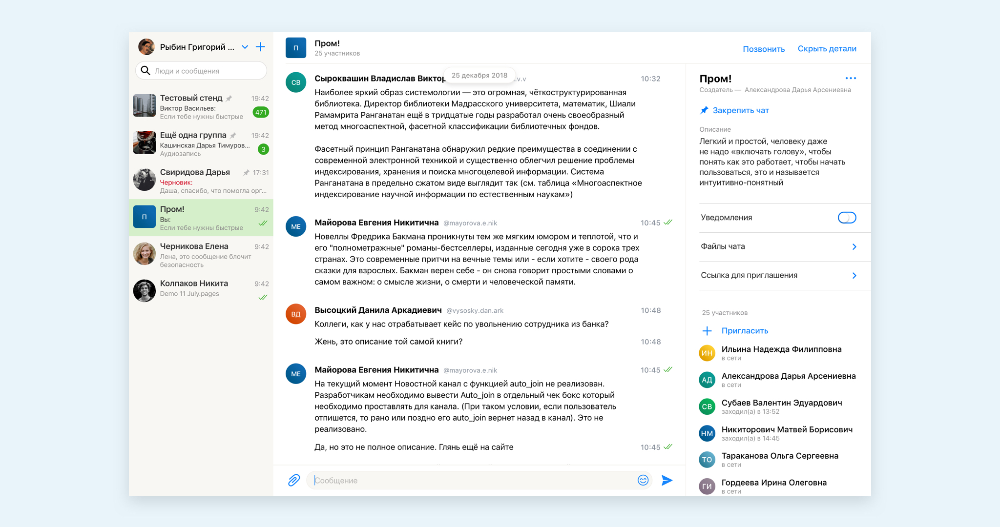
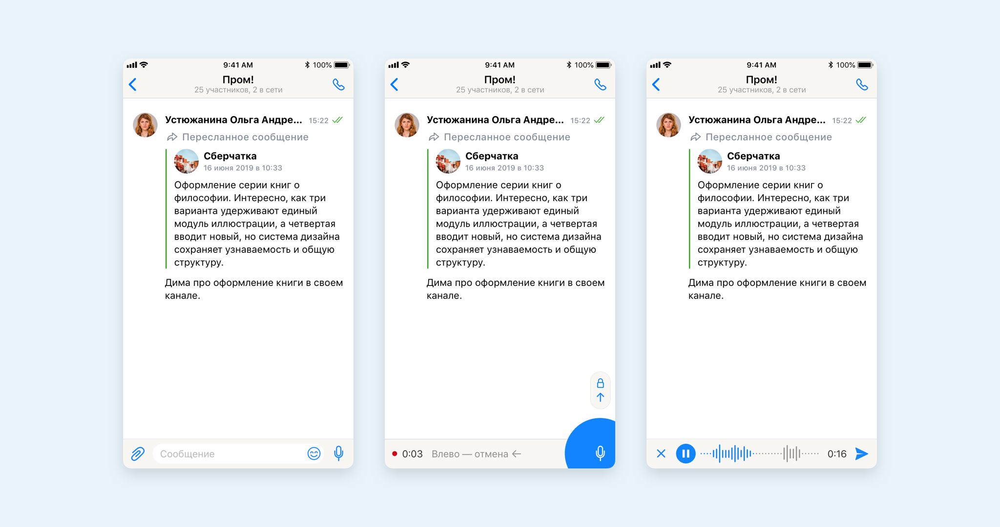
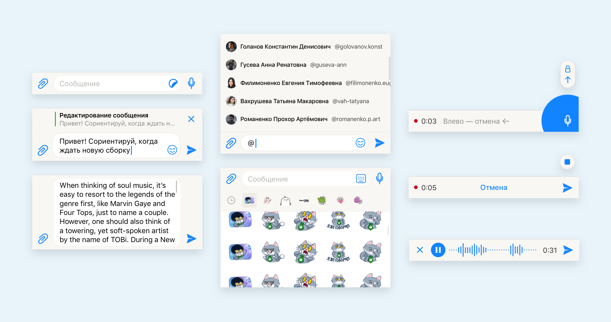
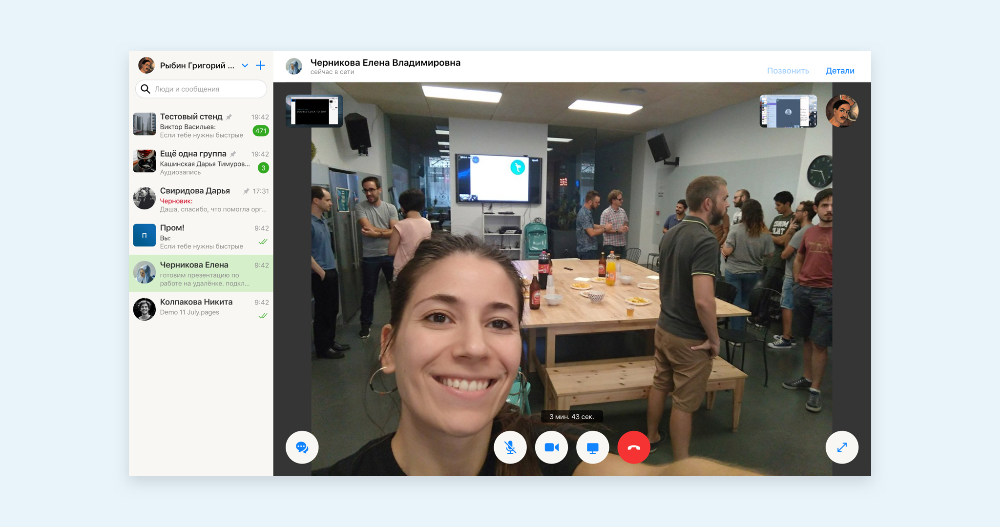
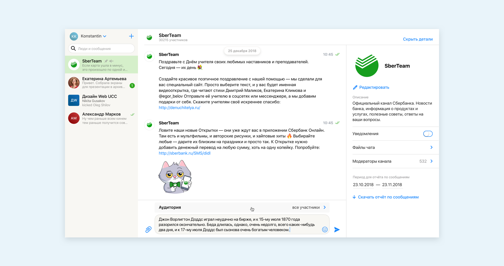
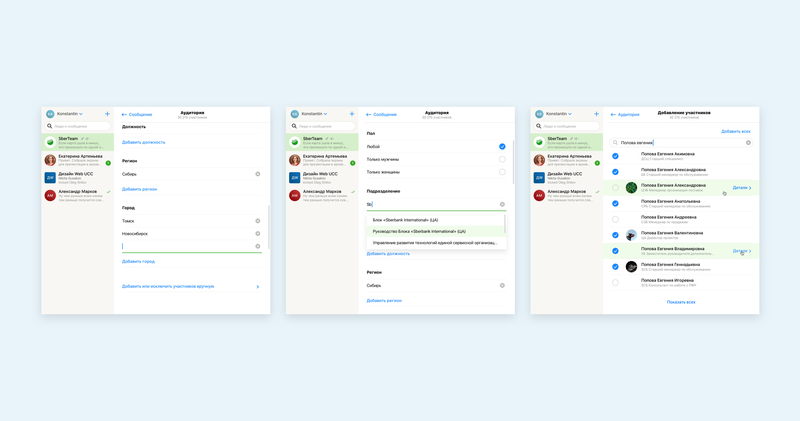
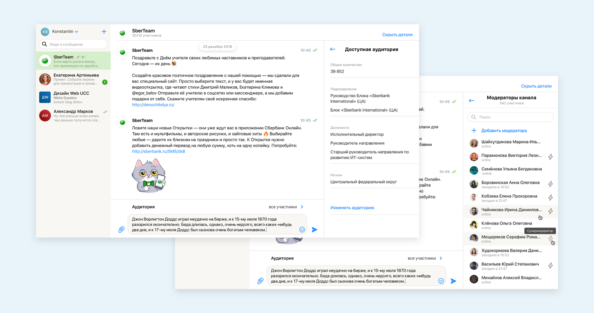
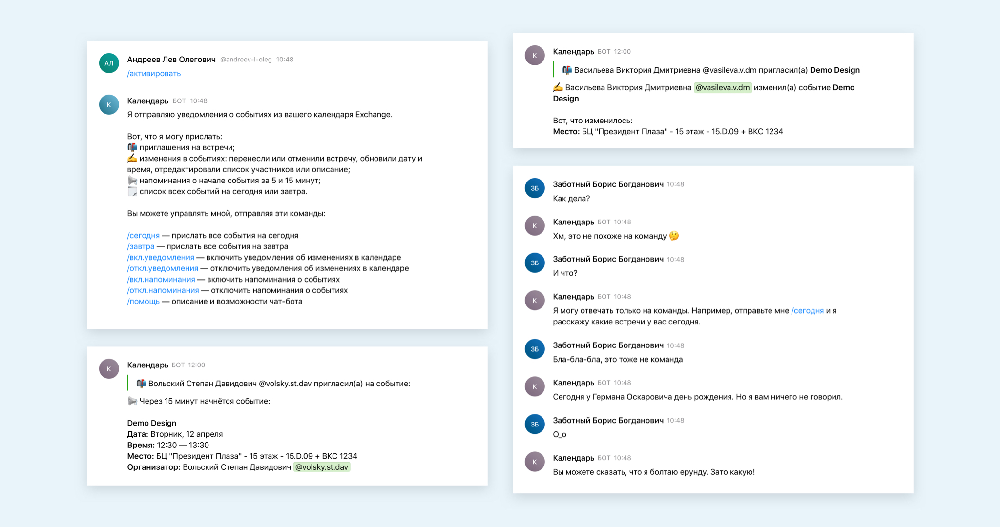

О проекте
Сбербанк купил сервис Dialog и поставил задачу запустить корпоративный мессенджер. Концепция была определена арт-директором. Затем я самостоятельно поддерживал и развивал продукт в течение года. Отвечал за весь дизайн на всех платформах.

Что было сделано
Спроектировал интерфейсы чатов, видеозвонков и отправки таргетированных сообщений. Подготовил скриншоты для App Store (приложение убрали из стора) и Google Play Market. Проработал логику взаимодействия с чат-ботом календаря.







Результат
В мае 2019 запустили Сберчат для всех сотрудников Банка (~300К). Реально пользовались около 5-6 тысяч. В продукте все ещё много багов, которые ломают пользовательский опыт. Разработка занималась исправлением багов и почти не разрабатывала новый функционал. Поэтому многое из того, чтобы было спроектировано и согласовано не бралось в разработку. Я эмоционально выгорел. Нашёл себе замену и перешёл в другой проект.